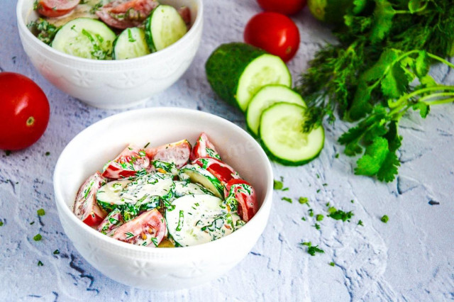

Летний салат

Описание
Салат с помидорами и огурцами – классика кулинарного жанра. Это полноценное блюдо, которое не
требует дополнительного гарнира, обладает отменными вкусовыми качествами и подходит для
диетического питания.
Необходимые ингридиенты
- Помидоры - 200 г
- Огурцы - 150 г
- Укроп - 15 г
- Кинза - 10 г
- Майонез - 2 ст л
- Перец чёрный - по вкусу
- Соль - по вкусу
Приготовление
-
Как сделать салат из помидоров и огурцов с майонезом? Подготовьте необходимые ингредиенты.
Помидоры можно взять любые: обычные, черри. У меня коктейльные томаты. В качестве заправки
можно добавить сметану, йогурт, оливковое или подсолнечное масло. Зелень можно использовать
любую: укроп, петрушку, зеленый лук, базилик. Дополнить салат можно очищенной и нарезанной
тонкими полукольцами репчатой луковицей, сладким болгарским перцем или сыром фета.
- Огурцы вымойте, обсушите и нарежьте тонкими кружочками.
- Помидоры вымойте, обсушите и нарежьте дольками.
- Укроп и кинзу ополосните под проточной водой, обсушите и мелко порубите.
- В салатник выложите дольки помидоров, кружочки огурцов, рубленые кинзу и укроп.
-
Салат посолите, поперчите и заправьте майонезом. Все тщательно перемешайте и подавайте к
столу. Приятного аппетита!
На главную
Источник рецепта